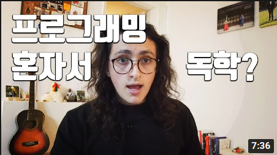
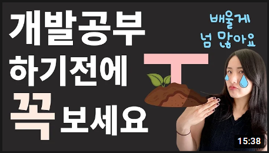

Youtube
#studyCoding
#studyCoder
#koreait
Clone Coding: Youtube 드림코딩에서 유튜브 모바일 웹사이트 따라 만들기 사용하는 문법: HTML, CSS, Javascript) → 가져오는 동영상 : 월페이퍼's 바다 움직이는 바탕화면
1M views 1month ago
1K
0
Share
Save
Report
공부중
1M subcribers
구독
Up next

프로그래밍 독학할때 자주 하는 실수 5가지
노마드 코더Nomad Coders
490K views

개발 공부 방법, 개발자 경력관리 | T자로 관리해서 더 높은 연봉 받기 ❤️ (학생, 취준생, 신입개발자, 비전공자를 위한 쿨팁)
드림코딩
120K views
지방대 개발 비전공자가 배달의민족 리드 개발자가 되기까지
eo
1M